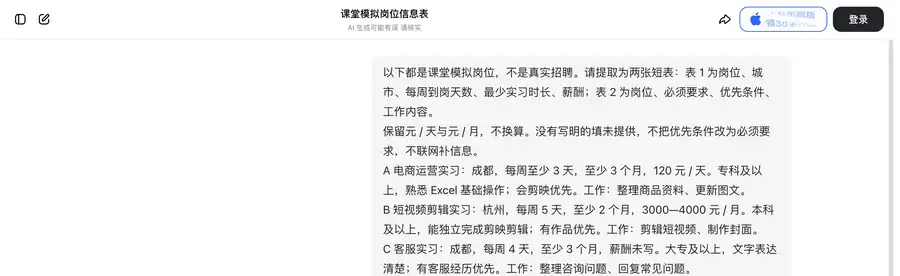
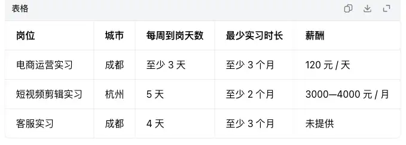
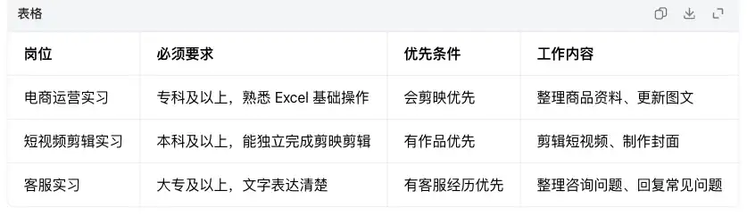
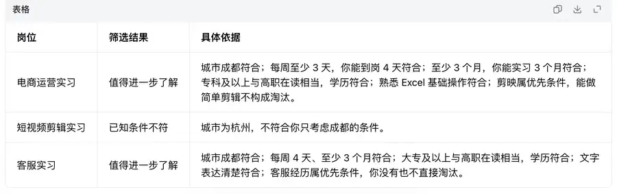
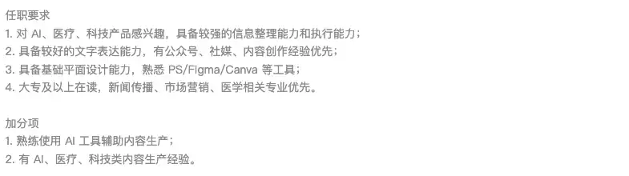
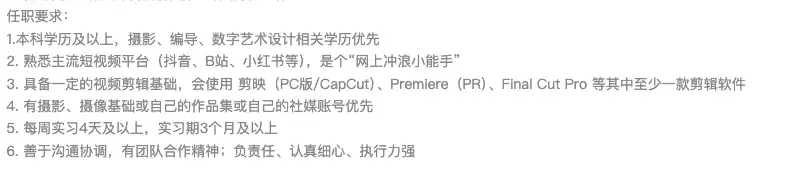
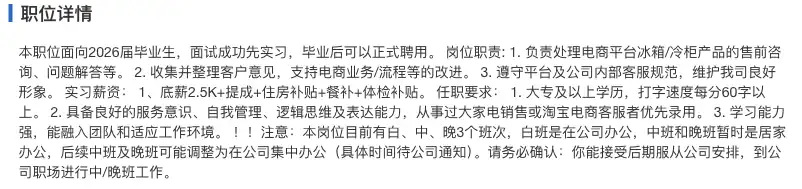

第六章｜AIGC应用与实践 · 第19次课 · 2 学时
AI整理实习招聘信息：提取要求，筛选岗位
00 知识回顾
上一课我们把需求拆解为具体功能规则，让AI编写出图片压缩工具。本课继续深化结构化提示方法：当面对大段招聘信息时，先让AI按固定要素提取岗位事实，再对照自己的时间与技能生成有据可查的筛选清单。
01 任务预告
本课成果： 一份结构化的《实习岗位筛选与决策清单》，包含标准化岗位要素表、个人条件匹配结果、差距说明及求职初次沟通问询话术。
完成标准：
- 岗位关键要素与原文严格对应，无虚构或遗漏；
- 明确区分硬性门槛（必须要求）与加分项（优先条件）；
- 筛选理由直接引用双方事实，不使用未经定义的综合评分；
- 针对存在信息缺口的岗位，给出可向招聘方核实的关键问题。
使用场景： 毕业求职或寻找顶岗实习时，各大平台招聘描述长短不一、标准混乱，甚至包含“薪酬面议”“能承受较大压力”等模糊表述。通过AI建立统一的信息过滤漏斗，在10分钟内理清多条岗位价值，避免盲目海投和无效面试。
02 基础概念
1｜信息提取与要素标准化：把招聘广告变成事实清单
招聘长文通常夹杂着公司宣传、氛围描述和格式各异的技能罗列。信息提取的作用是用统一的标准栏目（城市、每周到岗天数、实习时长、计价方式、任职要求）规范各岗位的客观事实。
AI在此处只做信息对齐，不重写广告，未知信息一律保留“未提供”。
- 本课例子： “每周至少三天，连续三个月”归一化为“出勤≥3天/周，时长≥3个月”；原文没有注明“可转正”或“支持远程”，就不能把它填成支持。
- 薪酬必须保留原始单位：“120元/天”与“3000—4000元/月”因出勤天数不同无法直接对比排名，不能在信息提取阶段强行折算。
2｜必须要求与优先条件：决定筛选题目的权重
- 必须要求（硬性门槛）： 岗位不可替代的准入底线，如学历层次（大专/本科）、硬性专业证书、出勤时间底线。有一项不符即视为条件不符。
- 优先条件（加分项）： 招聘方更偏好的优势背景，如“有自媒体作品优先”“会短视频拍摄优先”。不具备加分项绝不等于不符合岗位。
AI整理时必须保留限定词区别，不能把“会剪映优先”擅自拔高为“必须熟练操作剪映”。
3｜条件匹配与差距判断：用事实对照代替主观感觉
匹配不是简单判断“喜欢/不喜欢”，而是将自己的硬性条件（可到岗城市、每周空闲天数、最长实习期、已有技能）与岗位逐项比对：
- 确定冲突： 城市跨度且不包宿、学历层次不达标、时间严重不足。属于不可调和的客观差距。
- 可协商差距： 技能满足但每周差1天、缺少某项次要加分工具、薪酬未写明。这类岗位应列为“待深入核实”，去面试或初次沟通时重点确认。
匹配清单只作为进一步了解和投递准备的参考，不能代表岗位真实存在或保证面试通过。
03 核心案例
教师示范｜用豆包完成岗位要素提取与筛选决策
软件与材料： 豆包网页版，三条课堂模拟招聘和一份模拟个人简历片段。示范材料全部经过脱敏和教学改编，不涉及真实企业投递。
操作①｜输入材料，提取两张标准化短表
打开豆包进入新对话，粘贴下方提示词与模拟岗位材料。第一张表聚焦“时间、地点与待遇”，第二张表聚焦“要求、加分项与职责”；两表分立可保证在大屏和手机端都有清晰可读的排版。
以下是3条课堂模拟实习岗位，请提取为两张标准结构表：
表1（工作条件）：岗位名称、城市、每周到岗天数、最少实习月数、薪酬形式。
表2（能力要求）：岗位名称、必须要求、优先条件、主要工作。
提取规则：
1. 严格保留原文词句，不联网补充；没有注明的统一填“未提供”。
2. 区分天薪与月薪，不折算；保留“至少”“大专及以上”等限定词。
材料：
A 电商运营实习：成都，每周至少3天，至少3个月，120元/天。专科及以上，熟悉Excel基础操作；会剪映优先。工作：整理商品资料、更新图文。
B 短视频剪辑实习：杭州，每周5天，至少2个月，3000—4000元/月。本科及以上，能独立完成剪映剪辑；有作品优先。工作：剪辑短视频、制作封面。
C 客服实习：成都，每周4天，至少3个月，薪酬未写。大专及以上，文字表达清楚；有客服经历优先。工作：整理咨询问题、回复常见问题。

招聘材料与固定栏目一起输入，要求把必须条件和优先项分开。
操作②｜检查提取精度与细节保留
观察输出的两张表格，核对关键要素是否按规则保留：

到岗天数与时长分列，按天和按月的薪酬保留原计价方式。

要求表把Excel基础与剪映优先分开，客服经历仍是优先项。
- 检查表1：岗位C薪酬如实标为“未提供”，未随意编造数字。
- 检查表2：岗位A把“熟悉Excel”列为必须，“会剪映”列为优先；岗位B保持“本科及以上”学历门槛。
操作③｜输入个人条件，生成决策表与行动建议
在同一对话中，补充模拟求职者的个人条件。同时要求AI不仅给出筛选结论，还针对“信息不足”和“加分项”生成可以直接发送给HR的核实话术。
基于刚才提取的两张表，结合我的条件进行筛选：
我的情况：高职电子商务专业（大专在读），意向城市仅限成都；每周能到岗4天，能实习3个月；熟练Excel基础操作，会简单剪映剪辑，文字表达清楚；无全职客服经历。
输出要求：
1. 输出岗位决策表：岗位名称、筛选结论（只用“值得进一步了解”“确定条件不符”“信息待核实”三类）、核心事实依据。
2. 针对“值得了解”或“信息待核实”的岗位，各生成一句向HR礼貌核实关键疑问的话术（80字以内）。

筛选表将杭州岗位列为已知条件不符，理由指出它在杭州，与只考虑成都不符。
观察结果与深度决策：
- 岗位B被判定为“确定条件不符”，依据是地点在杭州且要求本科，直接规避了无效投递。
- 岗位A被判定为“值得进一步了解”，其必须要求完全契合，且个人掌握的简单剪映还能对应加分项。
- 针对岗位C薪酬未提供，AI输出的核对问题：“老师/HR您好，我对该客服实习岗位很感兴趣，已满足每周到岗4天及相关要求，想请教一下该岗位的实习津贴及计薪方式大致是怎样的，方便了解吗？”——直接为学生提供了实用职业交际模板。
04 实践任务｜制作你的实习岗位筛选与决策包
软件与材料： 豆包网页版或移动端。准备3份与本专业相关的真实实习JD截图或文本材料，也可以直接选用下方经整理的3组真实企业招聘底料。要求截图中裁掉私人头像、联系电话等隐私内容。
真实JD素材库｜从招聘原文中练习实战
岗位1｜杭州智昇人工智能 · 内容运营实习生
打开实习僧原始JD。适合电子商务、计算机应用专业，重点关注大专学历门槛、5天全勤与6个月超长实习期要求。
内容运营岗位标明大专学历、杭州、每周5天及连续6个月，到岗周期长。

任职要求中文字与基础设计为必须条件，内容创作经验标为优先，AI辅助列为加分项。
岗位2｜NIO蔚来 · 社交媒体剪辑实习生
打开实习僧原始JD。历史招聘材料（已下线）。重点观察知名车企的“本科及以上”学历红线，以及剪辑软件“至少掌握一款”的多选项表达。
剪辑岗位标明上海、本科、每周4天和实习3个月，页面显示职位已下线。

剪辑软件至少会一款，作品集或自己的社媒账号是优先条件。
岗位3｜合肥美的电冰箱有限公司 · 电商客服专员（2026届实习生）
打开国家大学生就业服务平台原始JD。历史招聘材料（已下线）。重点观察“顶岗实习转正”形式与全职排班机制，以及固定底薪与补贴的拆分说明。
客服岗位显示专科及以上、合肥、全职和职位已下线，右侧为招聘企业名称。

客服原文列出打字速度要求、客服经验优先、班次安排，以及底薪和补贴的不同组成。
若无外网或图片加载受限，可直接选用备用纯文本底料：
P 软件测试实习：西安，每周至少3天，至少2个月，100元/天。大专及以上，能写清操作步骤、会使用Excel；会Python优先。工作：按测试步骤操作网页、记录问题。
Q 前端开发实习：西安，每周5天，至少3个月，150元/天。本科及以上，掌握JavaScript、能独立制作网页；有项目作品优先。工作：修改页面功能与布局。
R IT支持实习：西安，到岗天数和最少时长未写，薪酬面议。大专及以上，能安装常用软件并清楚描述电脑问题；有相关实习经历优先。工作：整理故障记录、协助处理常见问题。
操作①｜带入材料，提取双表要素
将三条真实或模拟材料输入豆包，完成两张表格的提取对齐：
请梳理我提供的3条实习岗位材料，提取为两张标准结构表：
表1（工作条件）：岗位名称、城市、每周到岗天数、最少实习时长、薪酬形式。
表2（能力要求）：岗位名称、必须要求、优先条件、核心工作职责。
要求：
- 严格引用原句，缺项填“未提供”；
- 不折算天薪月薪，不改变学历层级（专科/本科）；
- 标出材料中出现的“弹性工作”“面议”等模糊待遇词。
材料：【粘贴3份JD文本，或依次上传对应的JD截图】
操作②｜输入个人实际条件，获取三类匹配结果
将个人的客观条件填入下方模板，获得精准的筛选结果与依据：
基于刚才生成的表1和表2，对照我的个人条件完成筛选：
【我的条件】
- 学历与专业：高职专科在读，专业【填写你的专业】
- 意向城市：【填写期望城市，如广州/清远/成都等】
- 可到岗时间：每周能到岗【X】天，可连续实习【X】个月
- 技能与经验：【列举已掌握的技能、考取的证书或课堂作业经验】
【输出要求】
输出一张《岗位匹配决策表》：
包含“岗位名称”“匹配结论（值得进一步了解 / 确定条件不符 / 信息待核实）”“核心依据”。
要求：依据必须同时指出岗位具体要求与我的哪一项条件匹配或冲突，不编造履历，不给虚构匹配率。
操作③｜实战升级：改写条件测试弹性，或生成一句求职自荐语
在以下两个动作中任选一项完成，体验AI在真实求职交互中的赋能：
- 选项A（条件调优与弹性验证）： 如果自己某个条件有弹性（如每周可从4天调整为5天，或愿意接受周边城市通勤），把变化输入给AI重新筛选，观察此前被淘汰的岗位是否重新变为“值得了解”，加深对“多条件联合制约”的理解。
- 选项B（生成微自荐话术）： 挑选出 1 个筛选结果为“值得进一步了解”的岗位，发送以下指令，让AI生成一段可在求职软件上直接发给HR的微打招呼语：
针对刚才筛选出的【岗位名称】，以我满足的条件为基础，为我生成一段100字以内的初次打招呼自荐语。
要求：
1. 语言诚恳职业，第一句点明专业、每周可到岗天数与实习时长；
2. 重点突出岗位必须要求中我完全满足的技能，并主动提及加分项；
3. 不编造虚假工作经验，结尾礼貌表达沟通意愿。
成果集中核验清单：
- 提取的两张表格中，薪酬与到岗天数未被错误折算或臆测；
- 筛选理由明确区分了“硬性学历/地点”与“优先加分项”；
- 自荐语或调优后的结果能真实反映个人情况，具备立即在招聘平台使用的实操价值。
05 本课总结
AI在信息密集场景中的最大价值是“去噪提取”与“逻辑核对”。通过固定要素表与条件比对，我们把充满营销修辞的招聘启事还原为清晰的事实清单，既保护了个人时间，也提升了求职决策的精准度。
| 核心能力自查 | 观察核验要点 |
|---|---|
| 要素提取标准 | 地点、出勤、薪酬各归其位，未注明项保持“未提供”，模糊表述被准确识别 |
| 条件权重明晰 | 硬性门槛不过关直接淘汰，优先加分项未满足不误杀 |
| 决策支撑闭环 | 匹配理由引用原文，可生成向HR核实疑点的话术与精准自荐文案 |
下节预告： 第20次课我们将学习《需求追问与流程草图：先问缺口再生成》，当客户或业务负责人的需求只有一句话时，怎样让AI在生成前先追问核心缺口。